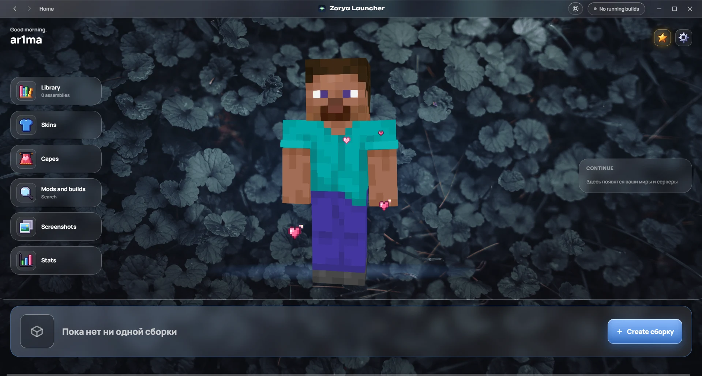

Внешний вид
Тема, акцентные цвета, фон картинкой или GIF.
Zorya — лаунчер Minecraft для тех, кто любит настроить всё под себя: тема, цвет, разделы. Настройте один раз — и он просто работает.

Тема, цвет, разделы и многое другое — крутите, и меняется страница.
Тема, акцентные цвета, фон картинкой или GIF.
Переключайте ненужное — всё уходит.
Zorya Launcher — лаунчер для любого стиля игры: моды, сборки, скины, статистика, импорт из других лаунчеров, разбор вылетов.
Установка в один клик, зависимости подтягиваются сами. Modrinth, CurseForge, Technic.
Работают и на лицензии, и на пиратке, на серверах и по LAN.
Время в игре и графики, галерея скриншотов с редактором.
Нет. Скачайте лаунчер и пользуйтесь.
Да.
Прямо на этой странице — кнопка «Скачать для Windows».